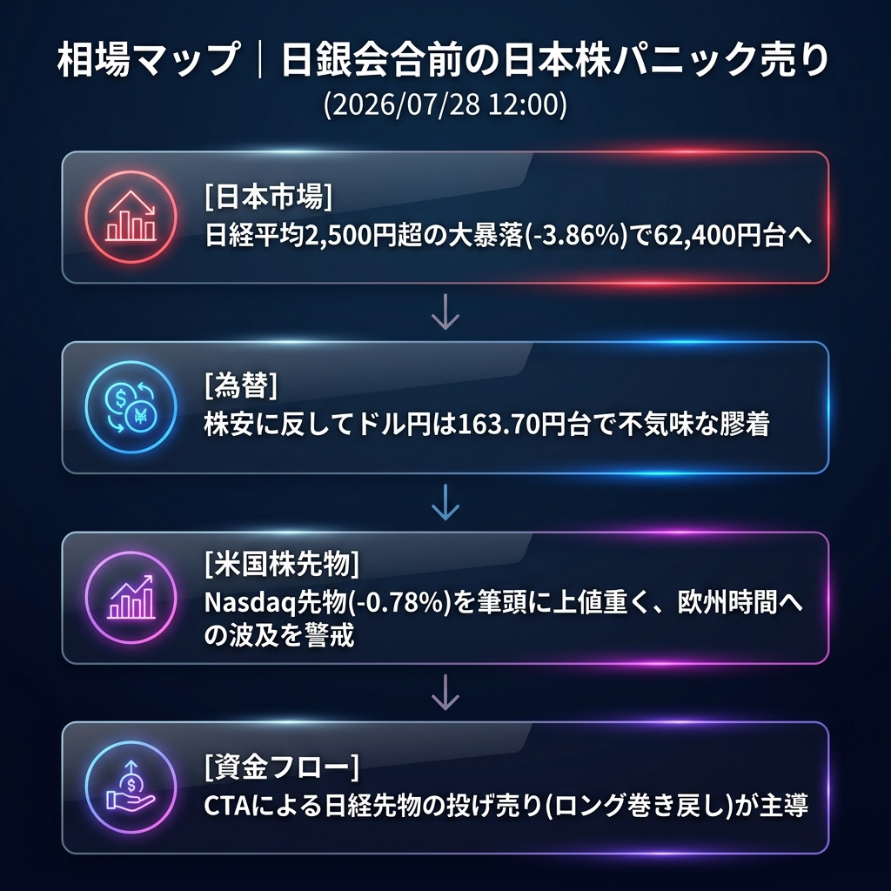

日経平均が前引けで2,500円超（-3.86%）の大暴落。日銀会合での「追加利上げ」に対する極度の警戒感と、米ハイテク株安の余波が直撃し、日本株単独での強烈なリスクオフが進行中です。
「日銀ショックの先取り（日本株のパニック売り）」と「グローバルなハイテク株からの資金流出」。
朝方のレポートで「日経先物は上値が重い」と指摘しましたが、東京市場オープン直後から海外勢による強烈な先物売り（リスクオフ）が持ち込まれ、日経平均は一気に62,000円台前半まで叩き落とされました。
一方で、ドル円為替は163.70円台で無風状態が続いており、「株安・円高」のセットではなく、「純粋に日本株のバリュエーション調整と利上げへの恐怖」が売りを主導している特異な状況です。
| 指数・銘柄 | 現在値 | 前回比（前日比） | 騰落率 | 確認事項 |
|---|---|---|---|---|
| S&P 500 (ES=F) | 7,429.25 | -19.00 | -0.26% | 時間外で軟調推移 |
| Nasdaq (NQ=F) | 27,969.0 | -221.0 | -0.78% | テック株への警戒感が根強い |
| Dow (YM=F) | 52,376.0 | -6.0 | -0.01% | 景気敏感株は底堅い |
| 日経225現物 | 62,422.35 | -2,508.84 | -3.86% | 【警戒】前引けで2,500円超の大暴落 |
| CME日経225先物 | 62,505.0 | -1,550.0 | -2.42% | 裁定売りを伴い急落 |
| USD/JPY | 163.747 | +0.045 | +0.03% | 株安に反して膠着状態 |
| EUR/USD | 1.1368 | -0.0007 | -0.06% | 小幅なドル高推移 |
| 金 | 4,041.1 | -35.9 | -0.88% | リスクオフで資金抜け |
| 原油 | 81.69 | -0.92 | -1.11% | 需要減退懸念でじり安 |
| BTCUSD | 63,389.45 | -317.21 | -0.50% | 株安に連れ安も下値は限定的 |
完全に「日本の株式市場（日経先物）」が主導。日銀イベントを前にしたCTA（商品投資顧問）やマクロファンドの「日本株ロング巻き戻し」が市場のボラティリティを跳ね上げています。
欧州勢が参入する午後以降、この「日本株のクラッシュ」をグローバルなリスクオフの予兆と捉えるか、単なる局所的な調整と捉えるかが最大の焦点です。欧州株価指数や米国株先物（とくにNasdaq）に売りが波及するかを監視する必要があります。
後場に入って日銀関係者からの「ハト派的（利上げ見送りを示唆するような）」な観測報道（リーク）が出た場合。その際は日経平均が強烈なショートカバー（急反発）を見せ、円安（164円突破）が進むリスクがあります。